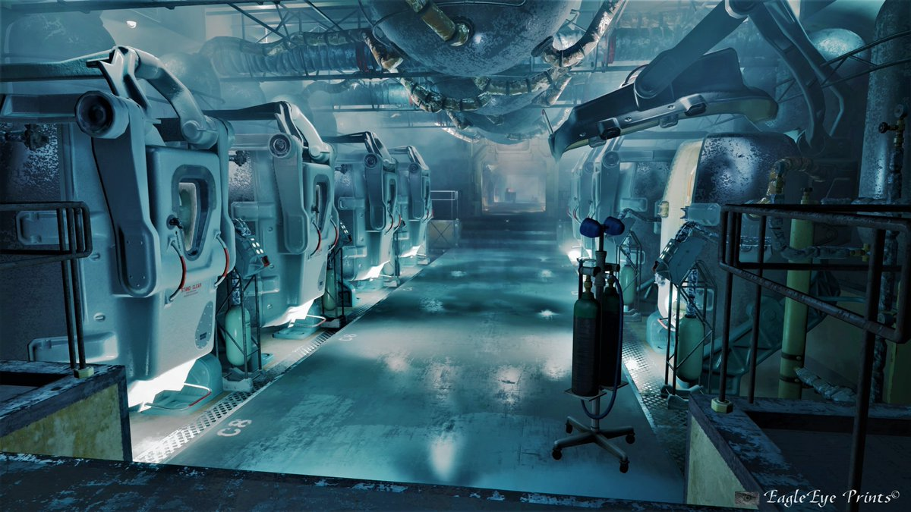
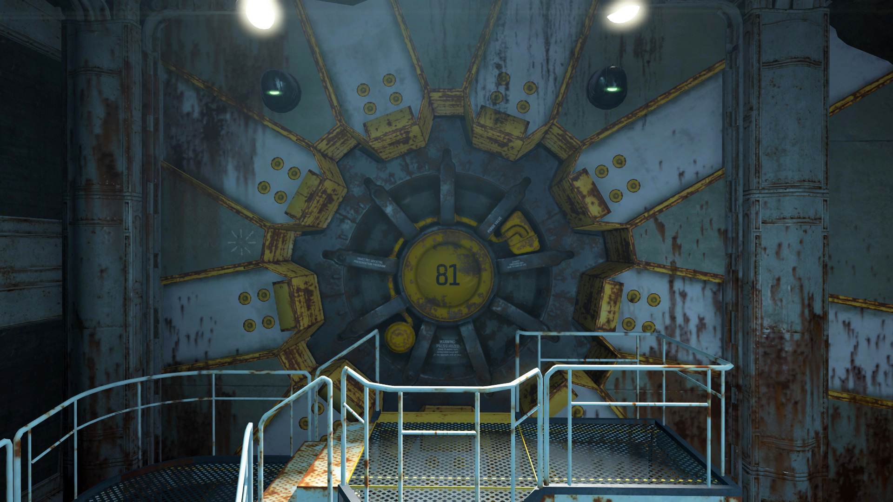
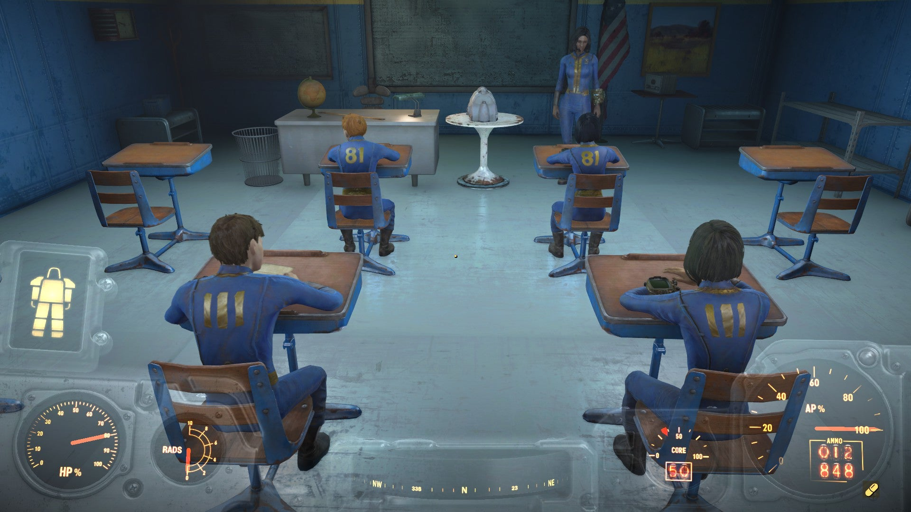
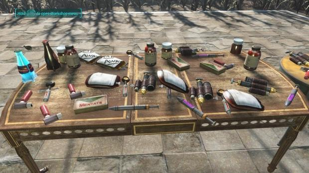

Experiments 
Vault 111
Vault-Tec designed Vault 111 to observe the effects of long-term cryogenic suspended animation on unsuspecting test subjects. Test subjects were lured to Vault 111 from the nearby neighborhoods of Sanctuary Hills and Concord and were placed in stasis pods after being told deceitfully that the purpose of the pods was for decontamination.
Vault 81
Vault-Tec created Vault 81 with the purpose of developing a single, universal cure for every sickness that humanity could possibly suffer from, using the residents as human test subjects. The vault was divided into two separate areas; the main vault, where up to 96 residents would make their home for the foreseeable future, and the secret vault, where Vault-Tec scientists would conduct their research and observe the residents as they were unknowingly exposed to different diseases and cures.
Vault 75
The experiment of Vault 95 is based around the malleability of young children. The experiment began after the bombs dropped in 2077. Upon entering, the children were separated from their families and escorted to the atrium, while the adults were executed by security staff, under the guise they were receiving "orientation." This act of murder coincided with the purpose of the vault, which was to enhance the gene pool of its selected residents to create stronger and more intelligent subjects. The surviving children were harshly tested mentally and physically - bordering on torture, and without regard for the survival of weaker individuals - as part of the experiment.
Vault 95
Vault-Tec created Vault 95 as a rehabilitation institute for people who suffered from chem addiction. The residents of the vault would continue with the program for five years, after which a planted Vault-Tec agent would then unearth a pre-placed, hidden supply of chems to test the social and psychological reactions of the community.